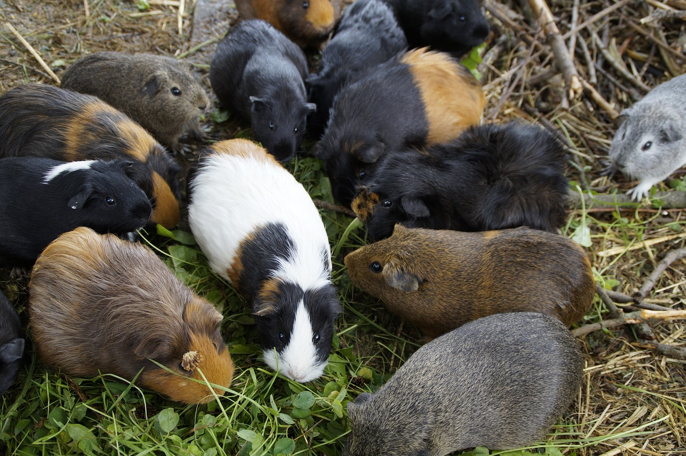
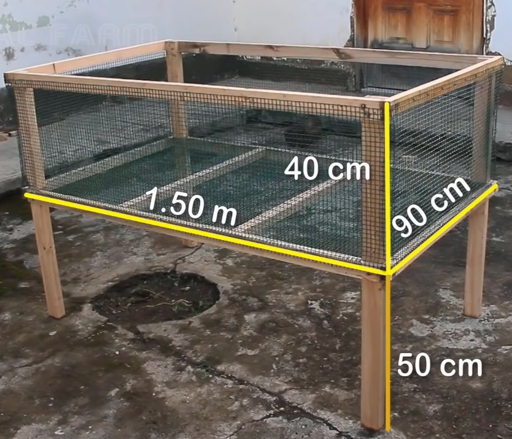

Porquinho da índia
As cobaias são nativas da América do Sul. No Peru eles chamam de “cuyes”, mas o animal tem muitos nomes diferentes em todo o mundo. Na República Democrática do Congo (RDC), os agricultores os chamam de “dende”, e achamos que isso vem do nome francês “Cochon d'Inde”, que significa “porco da Índia”. Mas eles não são porcos, nem da Índia ou da Guiné. Por isso, preferimos chamá-los de “preás domésticos”.
Porquinhos da índia têm muitos usos. Eles foram domesticados há milhares de anos como uma pequena espécie de gado e continuam a ser criados, mas, tradicionalmente, eles eram usados para carne. E eles ainda são hoje, em todo o mundo
Vantagens
A criação de porquinhos-da-índia é lucrativa, divertida e muito recompensadora ao mesmo tempo. A criação de porquinhos-da-índia não é um conceito novo, onde esses animais estão sendo mantidos por muito tempo para alimentação.
O preá doméstico produz carne de alta qualidade, semelhante à do frango, com alto teor de proteína. Sua gordura também é rica em ácidos graxos poli-insaturados saudáveis.

Alimentação
Cavies não competem com os humanos por sua comida. Cavies são quase como vacinhas: eles se alimentam de todos os tipos de forragem verde e são bastante fáceis de manter. Eles não são exigentes com o que comem e também não adoecem facilmente.
Cuidados
Por serem presas na natureza, são bastante desconfiados e assustados.
Apesar de porquinhos da índia terem o hábito de lamber o próprio pelo para se limpar, isso muitas vezes não é suficiente para mantê-los limpos. Principalmente para aqueles de pelo longo, recomendando assim, remover sujeiras e pelos mortos da préas para evitar a contaminação na carne.

Abrigo
Para começar com uma criação básica, uma gaiola simples é o recomendado a ser feito:

Contendo:
- - 4 Suportes de 50cm
- - 6 Ripas de base de 90cm
- - 4 Ripas laterais de 1 metro e meio
- - 5 Telas para cobrir a estrutura sendo :
- 2 Telas de 1.50m X 40cm
- 2 Telas 90cm x 40cm
- 1 Tela de 1.50m X 90cm
Cada gaiola pode alojar até 10 préas adultos.